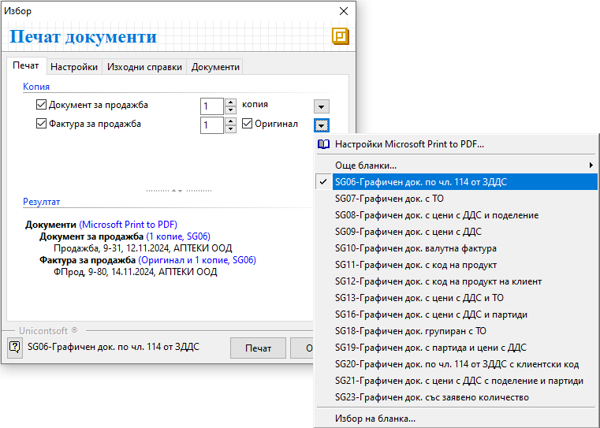
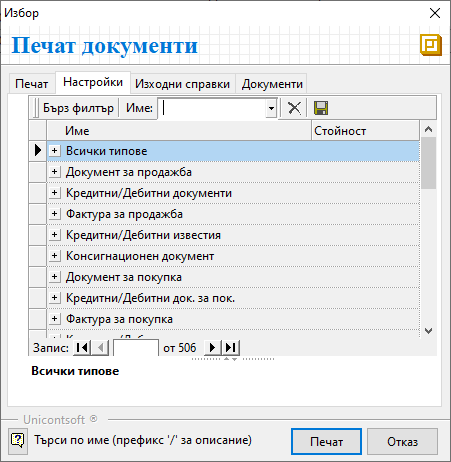
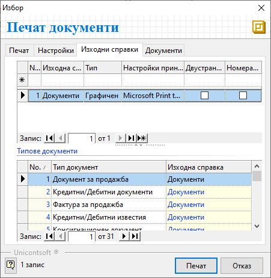

4.2. Настройки при печат на документи#
Системата осигурява възможност за персонализиране на настройките при печат на документи. Това позволява форматиране и прилагане на различен шаблон за печат при отделните типове документи.
Последно конфигурираните настройки се запаметяват и системата ги предлага при следващ печат.
Бутоните Преглед и Печат са достъпни от:
Лента с инструменти във формата за редакция на документ;
Избраният документ трябва да е отворен на екран.Меню Файл в основното меню на контейнера;
Избраният документ/и за печат трябва да бъде предварително маркиран.Лента с инструменти в контейнера;
Избраният документ/и за печат трябва да бъде предварително маркиран.Опционално меню, което се отваря с десен бутон върху предварително маркиран запис/и от списък с документи;
В секция Печат могат да бъдат избрани документите, които системата да отпечата, чрез поставяне на отметка. За всеки отделен тип документ може да се настрои в колко екземпляра да бъде отпечатан. Чрез бутоните вдясно се отварят опционални менюта за избор на шаблон при печат. Системата дава възможност за избор на различен шаблон за всеки тип документ.

В секция Настройки има възможност да бъдат форматирани страниците и съдържанието за печат общо за всички документи.
Друга част от настройките са групирани отделно по типове документи. Системата позовлява индивидуална настройка за всеки тип документ, която се взема предвид с предимство пред общите настройки във Всички типове.

Чрез наличните опции за адаптиране на съдържанието могат да бъдат управлявани подредбата и източниците на данните в печатния документ.
В секция Изходни справки може да се промени Тип на справката между Графичен и Текстов.
В полетата на колона Настройки принтер се избира на кой принтер да се извърши печата. Системата предлага списък с предварително настроените принтери и отбелязва принтерът по подразбиране.
Настройката Двустранен печат дава възможност за отпечатване на документи, като се използват и двете страници на листа. Настройката се активира/ деактивира с поставяне/ махане на отметка.
Чрез настройка Номерация на страници системата предлага визуализация на пореден номер за всяка отпечата страница от документ. Опцията се активира/деактивира чрез поставяне/махане на отметка.

Свързани статии:
Как да извършим настройки за печат на документи?
Как да отпечатаме Документ за продажба?
Как да отпечатаме външнотърговска фактура?
Как да отпечатаме Документ за покупка?